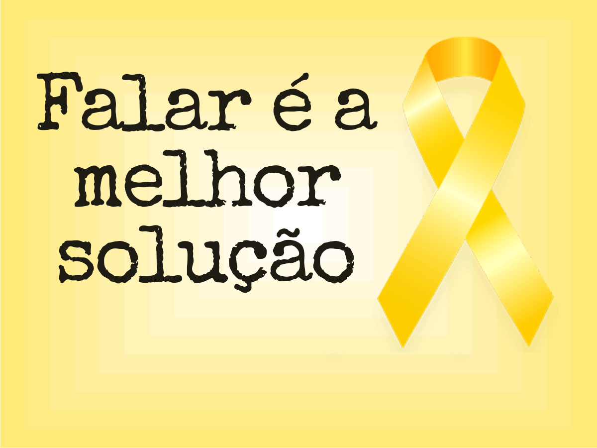

Setembro Amarelo, Todos Pela Vida
Setembro Amarelo: Um Mês de Conscientização sobre a Saúde Mental
O Setembro Amarelo, que visa conscientizar a população sobre a prevenção do suicídio e a promoção da saúde mental. Essa iniciativa, que começou no Brasil em 2015, tem ganhado cada vez mais destaque, refletindo a necessidade urgente de abordar um tema que, por muito tempo, foi tratado como tabu.
Mas Afinal, O que é o Setembro Amarelo?
Setembro Amarelo é uma campanha promovida por diversas instituições, incluindo o CVV (Centro de Valorização da Vida), e tem como principal objetivo a prevenção do suicídio e o incentivo à conversa sobre saúde mental. A escolha da cor amarela simboliza a valorização da vida, assim como a luz do sol que ilumina os dias, trazendo esperança.
A Importância da Conscientização
Os dados sobre suicídio são alarmantes. Segundo a Organização Mundial da Saúde (OMS), cerca de 800 mil pessoas morrem por suicídio a cada ano no mundo. No Brasil, o Ministério da Saúde estima que, em 2020, houve um aumento significativo nos casos, especialmente entre jovens. Isso evidencia a necessidade de discutir abertamente o tema, quebrando o estigma que envolve a saúde mental.
Dados Estatísticos Sobre a Saúde Mental
Além dos dados alarmantes da OMS, é importante destacar que no Brasil, segundo a Universidade de São Paulo, cerca de 11,5% da população sofre de algum transtorno mental. Grupos como jovens e mulheres são especialmente vulneráveis, apresentando taxas mais altas de depressão e ansiedade.
Sinais de Alerta
Fique atento a alguns sinais que podem indicar que alguém precisa de ajuda, como:
- Mudanças repentinas de comportamento
- Isolamento social
- Fala frequente sobre suicídio ou sobre a morte
- Sentimento de desesperança
- Mudanças no apetite ou no sono
É crucial agir com empatia e oferecer apoio.
Como Ajudar
Se você perceber que alguém está passando por dificuldades, considere as seguintes ações:
Esteja presente e demonstre que se importa.
Recursos e Apoio
Se você ou alguém que você conhece está precisando de ajuda, aqui estão alguns recursos úteis:
- **CVV**: Centro de Valorização da Vida – **188** (atendimento gratuito e confidencial);
- **WhatsApp do CVV**: (xx) xxxx-xxxx;
- **Hospital das Clínicas** – Serviços de psiquiatria;
- **Linhas de apoio** disponíveis em sua cidade.
Depoimentos
“Eu achei que nunca conseguiria superar, mas com apoio e terapia, hoje sou uma nova pessoa.” – **Maria, 25 anos**.
Atividades e Eventos
Durante setembro, várias instituições promovem eventos de conscientização, como palestras, rodas de conversa e caminhadas. Confira a programação em sua cidade e participe!
Chamada para Ação
Ajude a espalhar a mensagem do Setembro Amarelo! **Compartilhe esta página** e converse sobre a saúde mental com amigos e familiares. Juntos, podemos fazer a diferença!
Referências
Para mais informações, consulte as seguintes fontes:
- **Organização Mundial da Saúde (OMS)**;
- **Ministério da Saúde**;
- **Centro de Valorização da Vida (CVV)**.
Perguntas Frequentes
O que é o suicídio? É a ação de tirar a própria vida, geralmente ligada a problemas de saúde mental.
Como posso ajudar alguém que está pensando em suicídio? Ouça com empatia, valide os sentimentos e incentive a procurar ajuda profissional.
